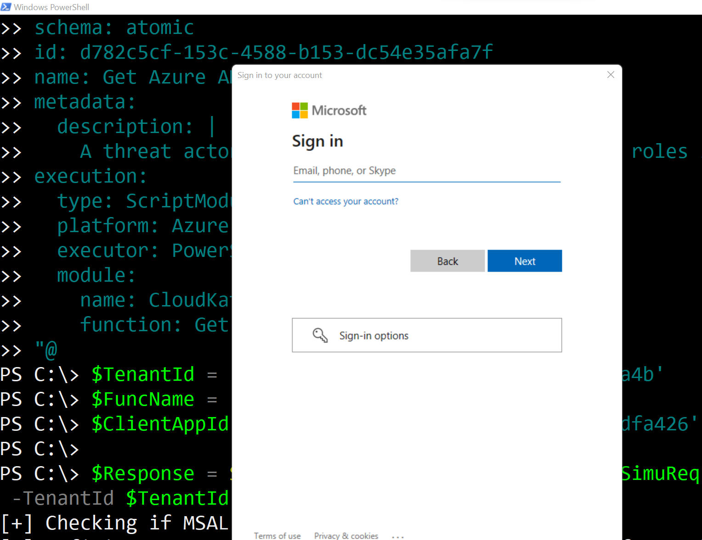
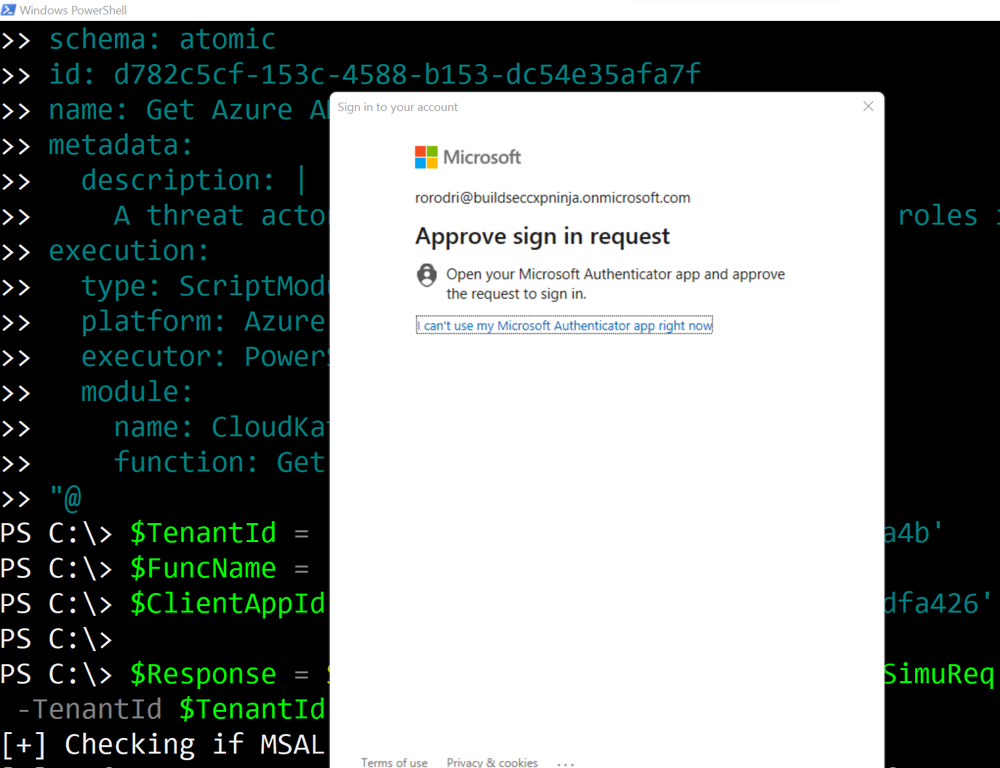
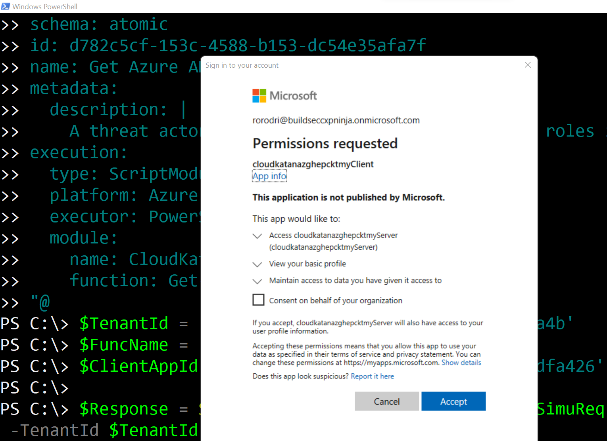
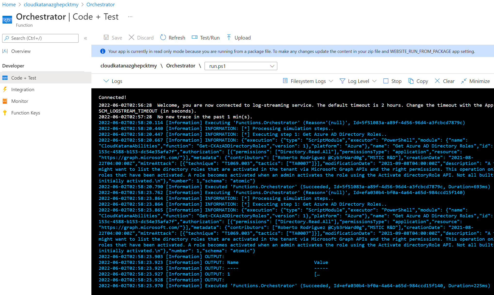
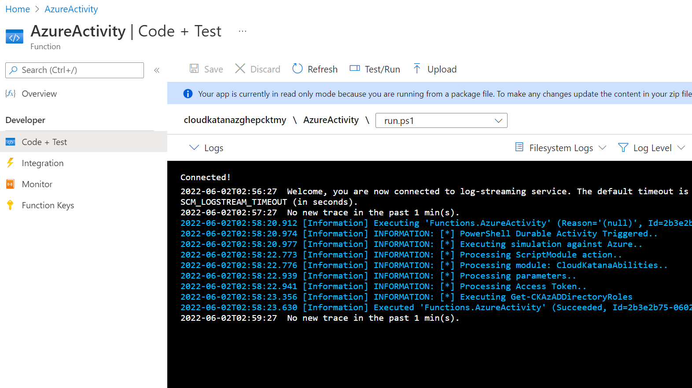

Request Simulations#
Import Cloud Katana Tools Module#
Import-Module .\CloudKatanaTools.psm1
Set Cloud Katana Variables#
$TenantId = '<TENANT-ID>'
$FuncName = '<FUNCTION-APP-NAME>'
$ClientAppId = '<CLIENT-APP-ID>'
Define Simulation Request#
Whether you want to run an atomic or campaign simulation, you can define it as a JSON object in the following ways:
Local JSON Strings#
$SimuReq = [ordered]@{
"id" = "attackscenario-d782c5cf-153c-4588-b153-dc54e35afa7f"
"name" = "Admin promotion via Directory Role Permission Grant"
"metadata" = @{
"creationDate" = "2021-11-01"
"modificationDate" = "2022-05-01"
"platform" = @(
"Azure"
)
"description" = "Get Azure AD Directory Roles"
"contributors" = @(
"Roberto Rodriguez @Cyb3rWard0g"
)
"mitreAttack" = @(
@{
"technique" = "T1580"
"tactics" = @(
"TA0007"
)
}
)
}
"authorization" = @(
@{
"resource" = "https://graph.microsoft.com/"
"permissionsType" = "application"
"permissions" = @(
"Directory.Read.All"
)
}
)
"steps" = @(
@{
"number" = 1
"name" = "AddPasswordToAADApp"
"execution" = @{
"type" = "ScriptModule"
"platform" = "Azure"
"executor" = "PowerShell"
"module" = @{
"name" = "CloudKatanaAbilities"
"version" = "1.3.1"
"function" = "Get-CKAzADDirectoryRoles"
}
}
}
)
} | ConvertTo-Json -depth 5
Remote JSON Strings#
The project comes with several examples that you can use directly from its GitHub repository:
$SimuReq = (Invoke-WebRequest -Uri 'https://raw.githubusercontent.com/Azure/Cloud-Katana/main/scenarios/azure/AADLightDiscovery/ScenarioDeploy.json').ToString()
Local JSON File#
You can use the JSON string from the previous sections and save it as a .json file.
$simuReq = (get-item .\scenarios\azure\AADLightDiscovery\ScenarioDeploy.json).FullName
Request Simulation#
Use the Start-CKTSimulation function available in the CloudKatanaTools module to request a simulation.
JSON Strings#
$Response = Start-CKTSimulation -JsonStrings $SimuReq -FunctionAppName $FuncName -TenantId $TenantId -CloudKatanaAppId $ClientAppId
JSON File#
$Response = Start-CKTSimulation -Path $SimuReq -FunctionAppName $FuncName -TenantId $TenantId -CloudKatanaAppId $ClientAppId
Authenticate#
While the previous step is running, you will get a login prompt to authenticate


Accept Permissions Requested (One Time)#
The first time you use Cloud Katana, you will have to accept the permissions requested to access the Azure AD application exposing Cloud Katana APIs and enabling authentication and authorization via Azure AD. Click Accept.

Monitor Azure Function Logs#
Browse to your Azure Portal > Resource Group > Cloud Katana Function App > Functions
Orchestrator Logs#

Activity Functions Logs#

Inspect Output / Response#
In our example, we saved the response to variable $Response
$Response
Name Value
---- -----
output {1}
name Orchestrator
instanceId 203c649f-5771-431f-b15e-7b1411a4d001
createdTime 2022-06-02T02:58:19Z
input @{steps=System.Object[]; Metadata=; Name=Get Azure AD ...
lastUpdatedTime 2022-06-02T02:58:23Z
runtimeStatus Completed
The response contains a key named output. The value of output is a collection of dictionaries.
$response.output['1']
That’s It!